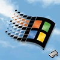
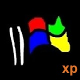
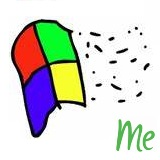

© Copyright 2024, WinDestruct and developers.
Creations
Here you can browse my projects I made for the entire Internet to see.
|  |
Windows 95 RAMdriveWindows 95 running straight from your computer's RAM? Now it's possible with this CD image! Read More... |
|  |
Windows FUModification of Windows XP that recreates a parody with the same name. It is the successor of Windows RG. Read More... |
|  |
Windows RGModification of Windows Millenium Edition that recreates a parody called "Windows RG Build 206". Read More... |